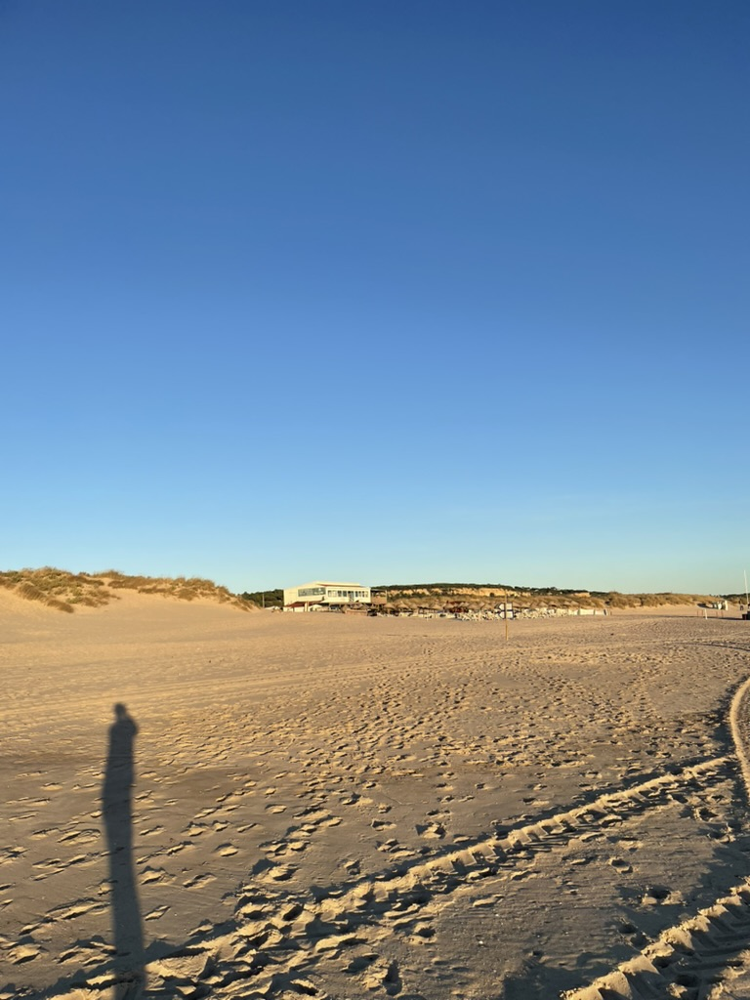
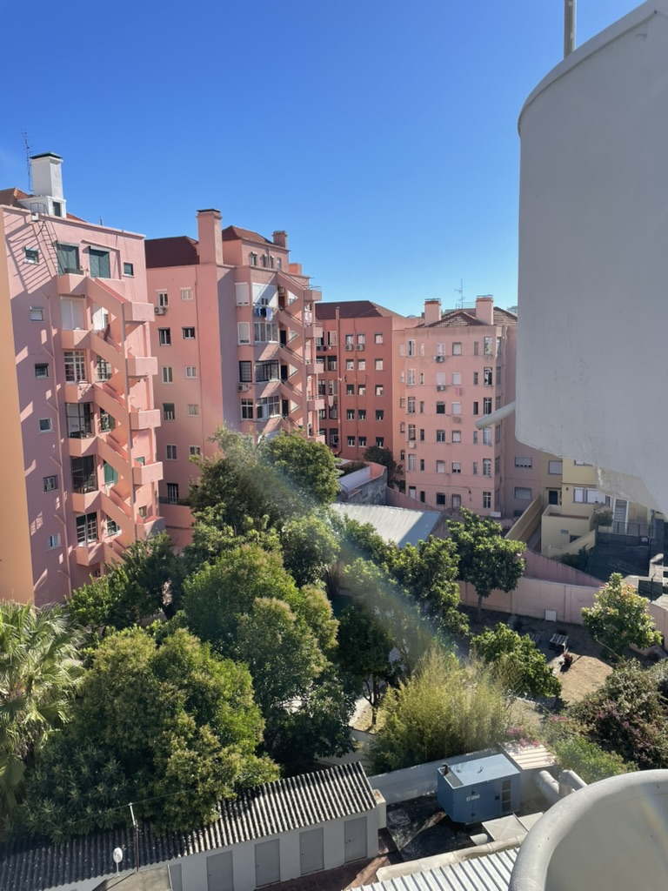
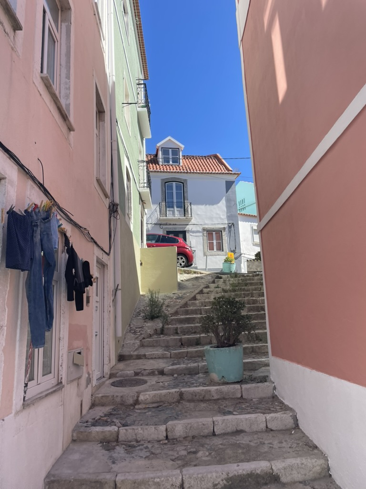
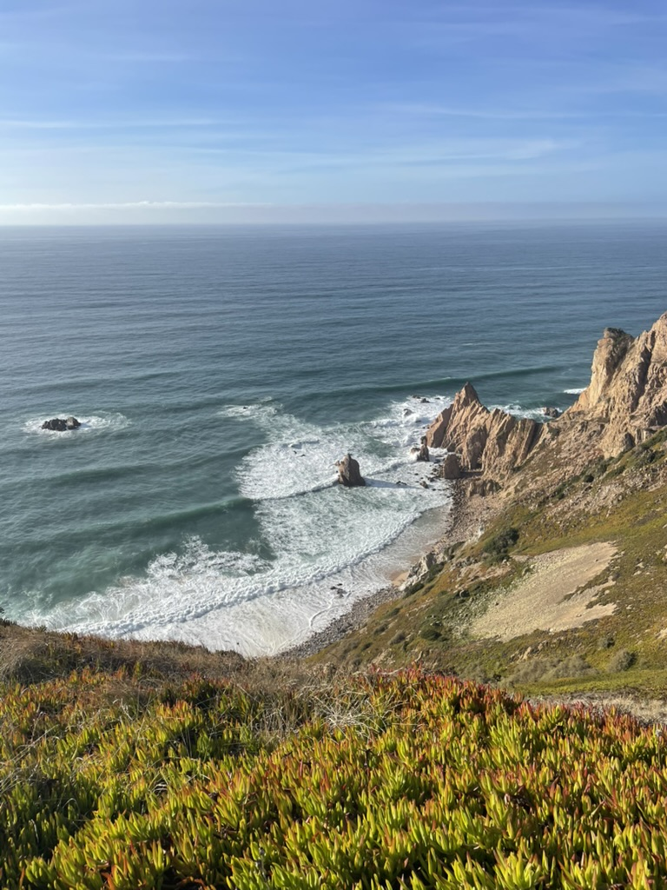
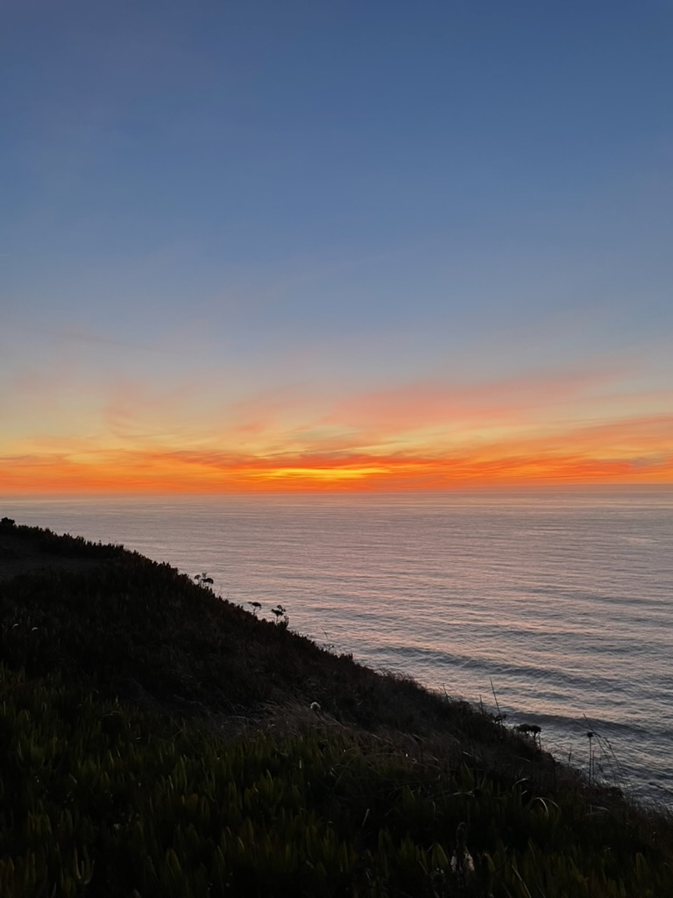

postkarten aus dem sommer
von elias am sonntag, 07. Dezember 2025
Huch. Wer hätte das gedacht? Das Blogprojekt war schon nach fünf Einträgen schon eingeschlummert. War wirklich nicht abzusehen, aber es war trotzdem so gekommen. Aber, aber: Man kann ja mal versuchen, das ganze wiederzubeleben, mal sehen was hierauf folgt. Plötzlich war fast ein halbes Jahr vergangen, der Sommer ist lang vorbei und die lustigen Zeiten in denen man jede Woche mit Urlaubsberichten hätte füllen können auch. Aber was soll's. Nikolaus ist ja wohl auch ein geeigneter Anlass, dem ganzen hier noch mal Leben einzuhauchen.

Es gibt trotzdem ein paar sommerliche Fotos. Winterliche Fotos sind zu deprimierend. Die Fotos sind aber eigentlich nur eine Ablenkung. Ich dachte, warum nicht einfach darüber schreiben, warum es hier so still war? Damit das ganze schöner aussieht und leichter zu lesen ist, hab ich ein paar Urlaubsbilder eingefügt.

Hier wurden eigentlich aus dem gleichen Grund keine Posts geschrieben, aus dem der Blog entstanden ist und der erste Post geschrieben wurde. Ideen sind spannend und es macht Spaß sie weiterzu entwickeln und zu perfektionieren. Die Idee einen Blog zu bauen macht Spaß. Die Idee Posts schreiben zu können macht auch Spaß. Es macht Spaß die ersten Posts zu schreiben. Aber dann kann ich nicht einfach in 10 Minuten irgendwas aufschreiben, obwohl genau das am Anfang die Idee des Blogs war. Stattdessen sitze ich an jedem Satz 10 Minuten um ihn zu entwickeln und zu perfektionieren. Ich weiß, dass es eh nicht perfekt wird und es auch gar nicht darum geht. Ein Blogpost kann gar nicht gut oder schlecht sein und trotzdem hab ich das Gefühl etwas gutes, oder unterhaltendes schreiben zu müssen. Das geht nicht, oder dauert viel zu lang. Stattdessen, fang ich einfach gar nicht erst an. Aus Angst, dass es nicht gut wird und zu lang dauert. Und dann bastel ich länger daran herum, eine Kommentarfunktion für Posts zu bauen und das Design zu verfeinern, als einen Post zu schreiben.

Genug damit! Ab jetzt wird hier einfach irgendwas heruntergeschrieben. Es muss nur schnell gehen und im Impuls entstehen. Und es muss fertig werden, bevor die Scham oder der Perfektionismus einsetzen. Wenn es fertig ist, ist eh alles ganz egal.

Aber die Kommentarfunktion ist trotzdem super. Schreibt euer Lieblings-Weihnachtsgebäck in die Kommentare! Bei 10 Kommentaren beschreib ich demnächst mein geheimes Kimchirezept.

Die Bilder sind übrigens aus Portugal im September. Es war super, und September ist der perfekte Monat für Urlaub dort.